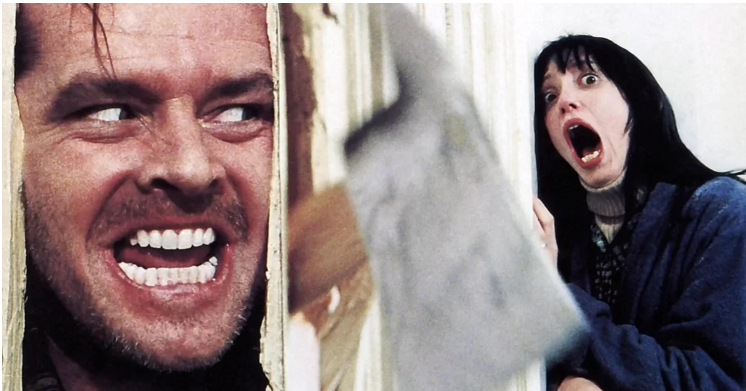
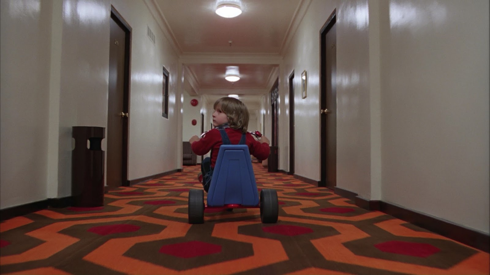

"O Iluminado" de Stephen King Desperta Inquietação e Debate Sobre o Horror Psicológico
São Paulo, 9 de Agosto de 2023 A icônica obra literária de Stephen King, "O Iluminado", publicada originalmente em 1977, está mais uma vez no centro das atenções, enquanto uma nova geração de leitores e acadêmicos explora suas camadas perturbadoras e abertamente assustadoras.O romance, que segue a história de uma família que se torna os zeladores de um isolado e assombrado hotel durante o inverno, tem sido amplamente elogiado por seu retrato angustiante de medo e isolamento. No entanto, conforme o mundo evolui e a compreensão da saúde mental e do terror psicológico se aprofunda, "O Iluminado" tem sido objeto de análises renovadas e algumas controvérsias.
A representação da deterioração mental do protagonista, Jack Torrance, e a maneira como sua violência é retratada levantam questões sobre a sensibilidade e a responsabilidade do autor ao abordar tópicos tão sensíveis. Enquanto muitos admiram a capacidade de King de mergulhar nas profundezas da psique humana, outros se questionam sobre os potenciais impactos negativos dessas representações.
Acadêmicos e críticos também estão envolvidos em debates sobre o gênero de horror psicológico, com "O Iluminado" sendo frequentemente citado como um exemplo pioneiro. Alguns argumentam que a obra oferece uma exploração valiosa das ansiedades e tensões psicológicas, enquanto outros alertam para os perigos de normalizar experiências traumáticas e perturbadoras.
Enquanto o livro continua a ser lido e discutido, é evidente que "O Iluminado" mantém sua capacidade de provocar inquietação e reflexões profundas. Sua permanência no cânone literário é um testemunho de sua complexidade e do impacto duradouro que tem sobre leitores de diferentes gerações.
Enquanto muitos elogiam a maestria narrativa de King e sua habilidade de explorar os cantos mais sombrios da mente humana, outros se preocupam com o potencial de desencadear desconforto emocional. A contínua relevância e debate em torno de "O Iluminado" ilustram como a literatura pode tanto desafiar quanto refletir a sociedade em constante evolução.